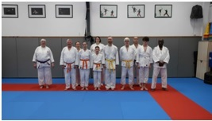

Kagami Biraki, stages & interclubs
Dojo Henri Courtine – Complexe sportif Marcel Sauvage
Place Sadi Carnot, Notre-Dame de Bondeville. Tatami confortable, encadrants
expérimentés et moments festifs tout au long de la saison (Kagami Biraki,
stages enfants, village estival, interclubs...).
Horaires des cours
Enfants (6–13 ans) : mercredi 14h–15h – Dojo Henri Courtine
Ados & adultes : lundi 19h30–21h – Dojo Henri Courtine
Ados & adultes : vendredi 18h15–19h30 – Dojo des arts martiaux
Tarifs saison 2025/2026
Enfants : 95 €
Ados & adultes bondevillais : 120 €
Ados & adultes hors N.D. de Bondeville : 135 €